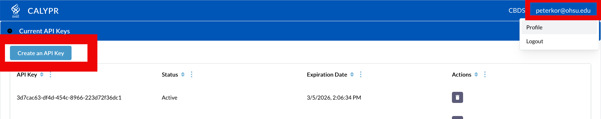
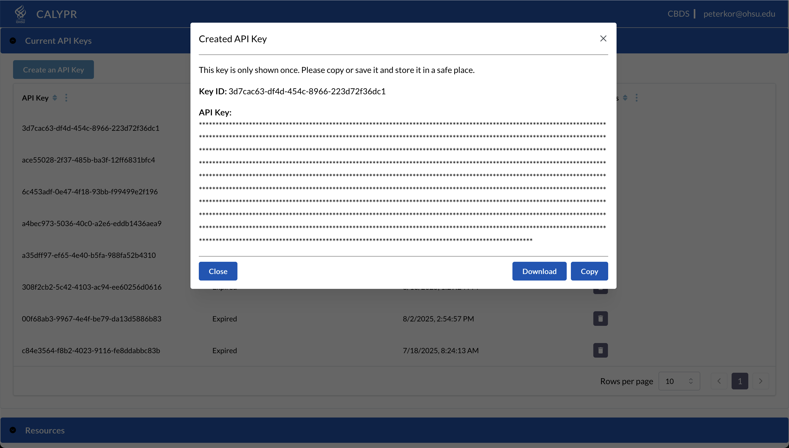

Git DRS — Quick Start¶
This page is a deeper walkthrough of the current git-drs workflow.
Git LFS is optional
git-drs does not require Git LFS for normal setup, tracking, push, or pull workflows.
Git LFS compatibility is still supported for older repos and mixed environments. See Git LFS Compatibility if you need that mode.
Prerequisites¶
Before installing Git DRS, you need Git installed on your system.
Install Git¶
Visit https://git-scm.com to download and install Git for your operating system.
Install Git DRS¶
Use the project installer or release workflow described in the main Quick Start and Installation Guide.
One installer path is:
/bin/bash -c "$(curl -fsSL https://raw.githubusercontent.com/calypr/git-drs/development/install.sh)" -- $GIT_DRS_VERSION
Update PATH¶
Ensure git-drs is on your path:
echo 'export PATH="$PATH:$HOME/.local/bin"' >> ~/.bash_profile
source ~/.bash_profile
Download Gen3 API Credentials¶
To use Git DRS, you need to configure it with API credentials downloaded from the Profile page.
- Log into the Gen3 data commons at https://calypr-public.ohsu.edu/
- Navigate to your Profile page
- Click "Create API Key"

- Download the JSON credentials file

- Save it in a secure location (e.g.,
~/.gen3/credentials.json)
Credential Expiration
API credentials expire after 30 days. You'll need to download new credentials and refresh your Git DRS configuration regularly.
Repository setup¶
Clone an Existing Repository or Create a New Repository
Create a new repository:¶
mkdir your-data-repo
cd your-data-repo
git init
2. Add Remote Configuration¶
Get the target scope from your team or steward in the form <organization/project>.
git drs remote add gen3 production <organization/project> --cred ~/.gen3/credentials.json
Note
git drs remote add ... bootstraps the repo-local hooks and config if they are missing. Since this is your first remote, it also becomes the default automatically.
3. Verify Configuration¶
git drs remote list
Output:
* production gen3 https://calypr-public.ohsu.edu
The * indicates this is the default remote.
Directory Structure¶
An initialized project will look something like this:
<project-root>/
├── .gitattributes
├── .gitignore
├── META/
│ ├── ResearchStudy.ndjson
│ ├── DocumentReference.ndjson
│ └── <Other FHIR>.ndjson
├── data/
│ ├── file1.bam
│ └── file2.fastq.gz
Track, Add, Commit, and Push¶
Track Large Files¶
Use git-drs tracking rules to select which files should be managed:
git drs track "*.bam"
git add .gitattributes
git commit -m "Track BAM files"
If you are working in a legacy mixed setup that still depends on Git LFS concepts, see Git LFS Compatibility.
Add, Commit, and Push Data¶
Once files are tracked, use standard Git commands to add and commit. During git push, git-drs uploads large objects and registers them with the configured DRS server.
# Add your file
git add myfile.bam
# Verify tracking state
git drs ls-files
# Commit and push
git commit -m "Add data file"
git push
What Happens Behind the Scenes
The git push triggers the git-drs upload and registration flow automatically. You do not need to run extra registration commands. The process:
- Git DRS creates DRS records for each tracked file
- Files are uploaded to the configured S3 bucket
- DRS URIs are registered in the Gen3 system
- Pointer files are committed to the repository
Download Files¶
Use git-drs to hydrate files on demand:
# Download tracked files
git drs pull
Check Status and Tracked Files¶
To see all files that are tracked in your repository as well as their status use:
git drs ls-files
example output:
4344054835 - WCDT-MCRPC/rna-seq/fdd8fe6d-584d-4d1c-acce-d592f3472e06.rna_seq.augmented_star_gene_counts.tsv
{
"name": "WCDT-MCRPC/rna-seq/fdd8fe6d-584d-4d1c-acce-d592f3472e06.rna_seq.augmented_star_gene_counts.tsv",
"size": 4216144,
"checkout": false,
"downloaded": false,
"oid_type": "sha256",
"oid": "43440548350b2994b0e100433dd0180be85f684f4729564616f2e0813ea0a7f3",
"version": "https://git-lfs.github.com/spec/v1"
}
Clone an Existing Repository¶
When you clone a repository that already uses Git DRS, the repo will contain small pointer files instead of full file content. You need to install Git DRS, configure the DRS remote for your local clone, and then pull file content.
Step 1 — Clone the Repository¶
Clone as you normally would. Pointer files are checked out automatically, but large file content is not downloaded yet.
git clone https://github.com/your-org/your-data-repo.git
cd your-data-repo
Step 2 — Configure the DRS Remote¶
Set up the DRS server connection. Your team or project documentation should provide the target <organization/project> scope:
git drs remote add gen3 production <organization/project> --cred ~/.gen3/credentials.json
Note
This step is required even if the original repository author already configured a DRS remote — remote configurations are local to each clone and are not committed to Git.
Step 3 — Pull File Content¶
Download the actual file content using git-drs:
git drs pull
Step 4 — Verify¶
Confirm that pointer files have been replaced with full content and that DRS-tracked files are recognized:
git drs ls-files
Files that have been properly added, tracked, committed and pushed will be uploaded to github as LFS pointer files in the format:
version https://git-lfs.github.com/spec/v1
oid sha256:4cac19622fc3ada9c0fdeadb33f88f367b541f38b89102a3f1261ac81fd5bcb5
size 84977953
Quick Reference¶
# Full clone workflow — copy and paste
git clone https://github.com/your-org/your-data-repo.git
cd your-data-repo
git drs remote add gen3 production <organization/project> --cred ~/.gen3/credentials.json
git drs pull
git drs ls-files
Managing Remotes¶
Add Multiple Remotes¶
You can configure multiple DRS remotes for working with development, staging, and production servers:
# Add staging remote
git drs remote add gen3 staging <organization/project> --cred /path/to/staging-credentials.json
# View all remotes
git drs remote list
Switch Default Remote¶
# Switch to staging for testing
git drs remote set staging
# Switch back to production
git drs remote set production
# Verify change
git drs remote list
Remove a Remote¶
If a remote is no longer needed, remove it by name:
git drs remote remove staging
After removal, confirm your remaining remotes:
git drs remote list
Warning
If you remove the default remote, run git drs remote set <name> to pick a new default before pushing or fetching.
Cross-Remote Promotion¶
Transfer and promotion workflows depend on the current command surface and deployment conventions. Use the main Commands Reference and your environment-specific process rather than older fetch-based examples.
Command Quick Reference¶
| Action | Command |
|---|---|
| Add remote | git drs remote add gen3 <name> --cred... |
| View remotes | git drs remote list |
| Set default | git drs remote set <name> |
| Remove remote | git drs remote remove <name> |
| Track files | git drs track "pattern" |
| Check tracked | git drs ls-files |
| Add files | git add file.ext |
| Commit | git commit -m "message" |
| Push | git push |
| Download | git drs pull |
| Push to remote | git drs push [remote-name] |
| Query DRS object | git drs query <drs-id> |
| Check version | git drs version |
Further Reading¶
- Troubleshooting — Common issues and solutions
- Developer Guide — Architecture, command reference, and internals
- Git LFS Compatibility — Optional compatibility notes for legacy mixed setups